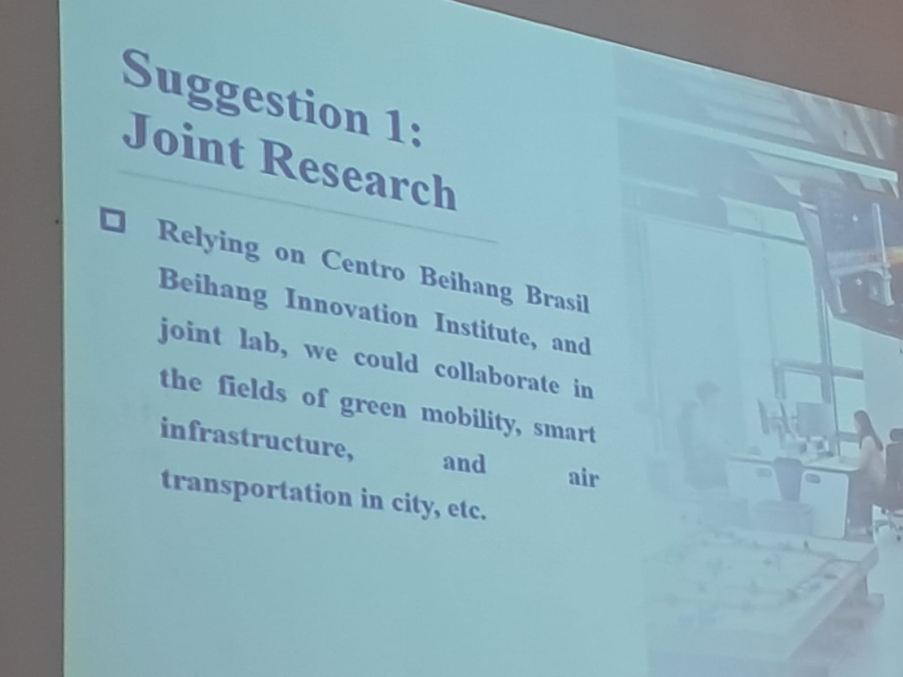
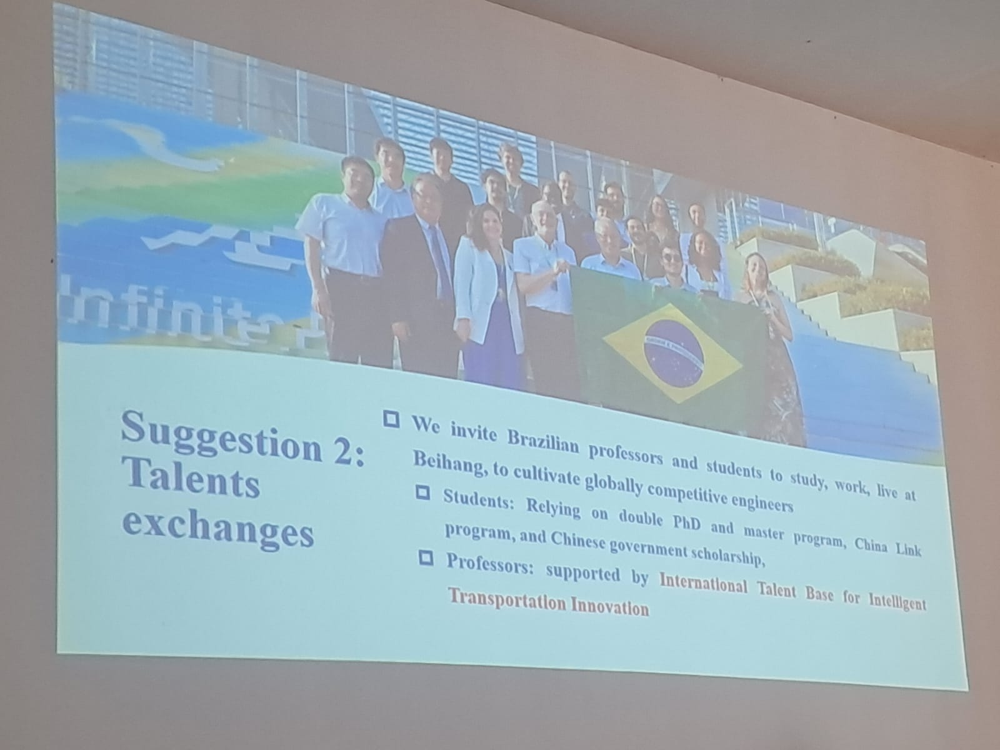
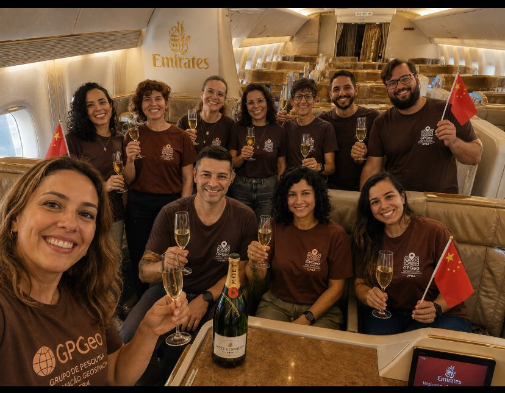
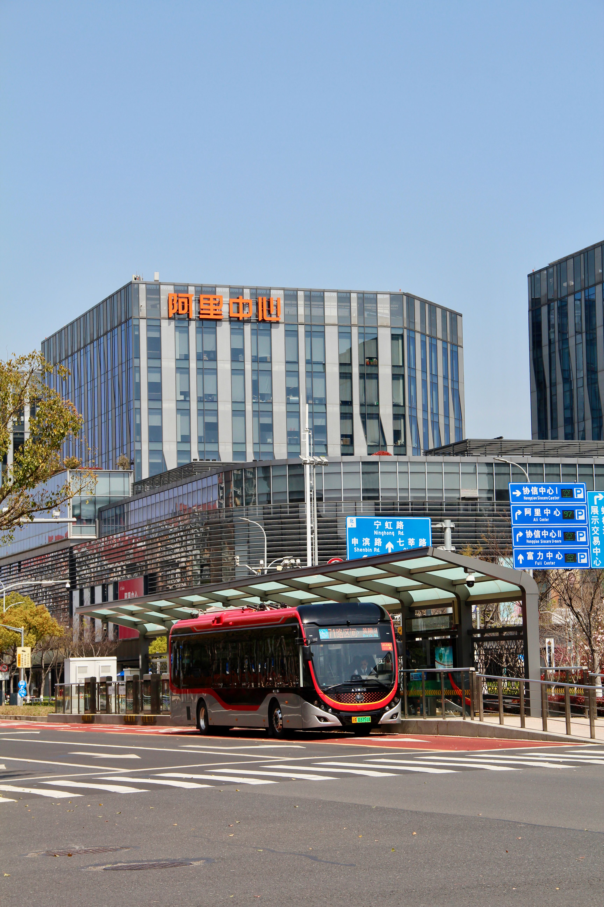
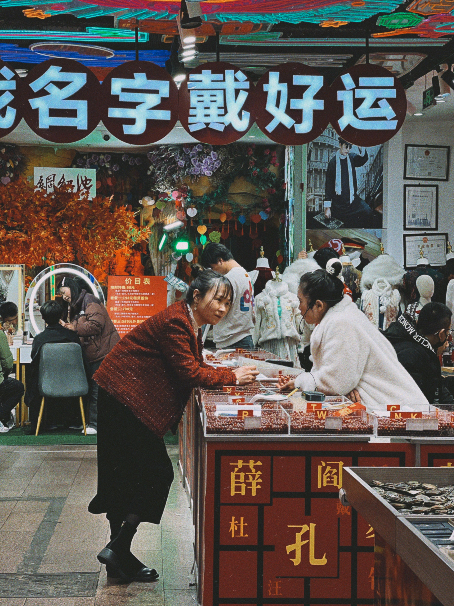
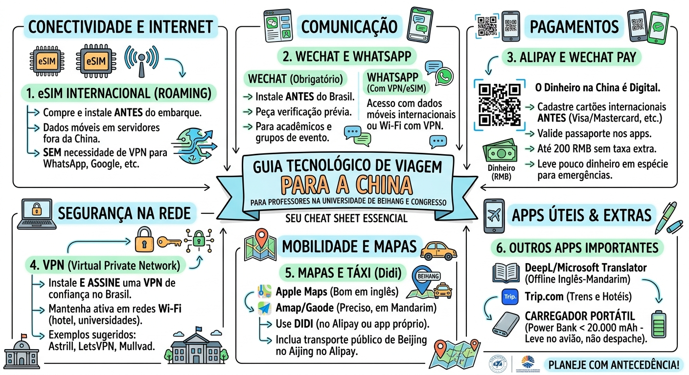

Faço entregas em Pequim
Novo fenômeno internacional da literatura contemporânea chinesa, Hu Anyan apresenta um relato sincero e bem-humorado sobre a realidade do trabalhador no século XXI.
Sep 12, 2026
;
A cooperação acadêmica e científica internacional une a Universidade Federal da Bahia (UFBA), por meio da Escola Politécnica, do seu Programa de Pós-Graduação em Engenharia Civil e dos departamentos de Engenharia de Transportes e Geodésia e de Engenharia Estrutural e de Construção, à Beihang University (BUAA), representada pela sua Escola de Ciência e Engenharia de Transportes.
Esta iniciativa busca construir uma ponte de conhecimento e inovação tecnológica entre o Brasil e a China, promovendo o avanço conjunto nas áreas de infraestrutura de transportes inteligentes e engenharia de estruturas e construção.
A colaboração entre os grupos de pesquisa das duas instituições estabeleceu os seguintes pilares estratégicos:
O fortalecimento desta aliança insere-se em um movimento mais amplo de aproximação científica sino-brasileira, respaldado por iniciativas de cooperação internacional como o Centro Beihang Brasil (CBB), o Instituto de Inovação Beihang no Brasil e a presença do Instituto Confúcio na UFBA.
Além disso, a cooperação mantém um canal ativo de diálogo com grandes projetos de infraestrutura do estado da Bahia, conectando a pesquisa acadêmica a desafios reais do setor, como as obras da Ponte Salvador-Itaparica em parceria com consórcios e empresas de engenharia chinesas (como CCECC e MBEC)
Em 28 de agosto de 2026, a Universidade Federal da Bahia (UFBA) recebeu a visita oficial de uma comitiva de professores e pesquisadores da Escola de Ciência e Engenharia de Transportes da Universidade de Beihang. O encontro acadêmico ocorreu na Escola Politécnica da UFBA, envolvendo diretamente o Departamento de Engenharia Estrutural e da Construção e o Departamento de Engenharia de Transportes e Geodésia.
A recepção e a articulação da agenda foram lideradas pela Profa. Dra. Dayana Bastos Costa (Pró-Reitora de Ensino de Pós-Graduação e docente da UFBA) e pela Profa. Dra. Vivian de Oliveira Fernandes, acompanhadas por professores e pesquisadores da instituição, como os docentes: Sávio Melo, Larissa Ribas, Jorge Ubirajara Pedreira Junior, Caroline Dias, Fernanda Carvalho, Marcela Sgura, Helio Junior…
A delegação da Universidade de Beihang foi composta por 5 professores e lideranças acadêmicas:

Além de apresentações institucionais e visitas aos laboratórios da Escola Politécnica, a programação da tarde contou com uma reunião técnica multilateral que reuniu importantes parceiros do setor produtivo e cultural:

A visita permitiu alinhar ações concretas de cooperação internacional, como a coorientação de alunos de pós-graduação, submissão conjunta de projetos para captação de fomento e o desenvolvimento de propriedade intelectual compartilhada (publicação de artigos e patentes). Como desdobramento imediato da visita, a liderança de Beihang formalizou o convite para a missão retributiva de pesquisadores da UFBA à China em novembro de 2026.

Em retribuição à visita acadêmica e visando o aprofundamento das pesquisas conjuntas, o Prof. Dr. Lik-ho Tam (Leo Tam), da Escola de Ciência e Engenharia de Transportes da Universidade de Beihang, formalizou o convite para que pesquisadores da Escola Politécnica da UFBA participem de uma série de cúpulas e workshops científicos internacionais na China durante a semana de 11 de novembro de 2026. Todas as despesas de viagem, hospedagem e subsistência diária dos participantes brasileiros serão custeadas por financiamento do governo e de instituições parceiras chinesas.
A missão científica abrange três eventos de grande relevância acadêmica e tecnológica:
| Data | Evento |
|---|---|
| 11 nov | Chinese Standard Time(CST): Chegada em Shanghai, China |
| 12 nov | Manhã CIEP em Shanghai |
| 13 nov | Tarde UPS em Hangzhou |
| 14 nov | IWTII na Transportation School em Hangzhou |
| 15 nov | Intercâmbio Transportation School |
| 16 nov | Aprofundamento da discussão sobre cooperação |
| 17 nov | Volta para Shanghai, China |
| 18 nov | Saída da China |
A comitiva de docentes e pesquisadores da Escola Politécnica da UFBA é composta por 10 integrantes:
Também conhecida simplesmente como China, é o maior país da Ásia Oriental e o segundo país mais populoso do mundo, com mais de 1,4 bilhão de habitantes, quase um quinto da população da Terra, superado apenas pela Índia. É uma república popular socialista unipartidária. Na constituição, descreve-se como um sistema multipartidário de cooperação e consulta política sob a liderança do Partido Comunista da China e como uma “ditadura democrática popular liderada pela classe trabalhadora e baseada na aliança de trabalhadores e camponeses”. Tem jurisdição sobre vinte e duas províncias, cinco regiões autônomas (Xinjiang, Mongólia Interior, Tibete, Ningxia e Quancim), quatro municípios (Pequim, Tianjin, Xangai e Xunquim) e duas Regiões Administrativas Especiais com relativa autonomia (Hong Kong e Macau). A capital da RPC é Pequim(ou Beijing).
A nação tem uma longa história, composta por diversos períodos distintos. A civilização chinesa clássica — uma das mais antigas do mundo — floresceu na bacia fértil do rio Amarelo, na planície norte do país. O sistema político chinês era baseado em monarquias hereditárias, conhecidas como dinastias, que tiveram seu início com a semimitológica Xia (aproximadamente 2 000 a.C.) e terminaram com a queda dos Qing, em 1911. Desde 221 a.C., quando a dinastia Qin começou a conquistar vários reinos para formar um império único, o país expandiu-se, fraturou-se e reformulou-se várias vezes. A República da China, fundada em 1911 após a queda da dinastia Qing, governou o continente chinês até 1949. Em 1945, a república chinesa adquiriu Taiwan do Império do Japão, após o fim da Segunda Guerra Mundial. Na fase de 1946–1949 da Guerra Civil Chinesa, o Partido Comunista derrotou o nacionalista Kuomintang no continente e estabeleceu a República Popular da China, em Pequim, em 1 de outubro de 1949, enquanto o Partido Nacionalista mudou a sede do seu governo para Taipei. Desde então, a jurisdição da República da China está limitada à Taiwan e algumas ilhas periféricas (incluindo Penghu, Quemói e Matsu) e o país recebe reconhecimento diplomático limitado ao redor do mundo.

Desde a introdução de reformas econômicas em 1978, a China tornou-se em uma das economias de mais rápido crescimento no mundo, sendo o maior exportador e o terceiro maior importador de mercadorias do planeta.

eSIM Internacional (Melhor Opção): Se os celulares do grupo forem compatíveis com eSIM, comprem planos de dados internacionais antes do embarque (via Airalo, Nomad, Holafly ou Trip.com). Como o tráfego de dados do eSIM faz roaming internacional, a conexão sai por servidores fora da China continental (geralmente Hong Kong ou Cingapura), permitindo acessar WhatsApp, Gmail, Google Maps e redes sociais sem precisar de VPN.
Chip físico local vs. Roaming: Se comprarem um chip físico dentro da China, a conexão estará 100% sujeita ao Great Firewall (bloqueando WhatsApp, Google e Instagram).

VPN (Essencial para conexões Wi-Fi): Nos hotéis e nas redes Wi-Fi da Universidade de Beihang, o acesso direto à internet continuará filtrado. Para usar notebooks ou conectar o celular no Wi-Fi, instalem e assinem uma VPN ainda no Brasil (provedores consolidados como Astrill VPN, LetsVPN ou Mullvad). Baixar VPNs dentro da China é extremamente difícil, pois os sites e as lojas de aplicativos oficiais bloqueiam esses downloads.
WeChat (Obrigatório): O WeChat (Weixin) é onipresente na China. Além de comunicação, ele é usado para criar grupos de trabalho acadêmicos, contatar anfitriões na Beihang e gerenciar inscrições de congressos.
Atenção ao cadastro: O registro com número brasileiro pode exigir verificação de segurança por um usuário que já use a plataforma há mais de 6 meses. Façam o cadastro com antecedência no Brasil.
WhatsApp: Funcionará perfeitamente quando estiverem nos dados móveis do eSIM/roaming internacional ou quando a VPN estiver ativa no Wi-Fi. Se ficarem dependentes apenas de Wi-Fi local sem VPN, o WhatsApp não receberá nem enviará mensagens.
A China opera praticamente sem dinheiro em espécie e maquininhas convencionais de cartão de crédito não são aceitas na maioria do comércio local.

Alipay (Principal para estrangeiros): É a ferramenta mais fácil de configurar para visitantes internacionais. Permite cadastrar cartões internacionais (Visa, Mastercard, Nomad, Wise). É amplamente aceito em restaurantes, lojas, táxis e até pequenas barracas.
WeChat Pay: Também aceita cartões internacionais hoje em dia. Recomenda-se cadastrar cartões em ambos os apps para ter redundância.
Taxas de transação: Transações de até 200 RMB costumam ser isentas de taxa de serviço do app; transações acima desse valor costumam ter acréscimo de 3% cobrado pela plataforma. Dinheiro em espécie: Levem uma quantia modesta em Yuan (RMB) para emergências de chegada, mas tenham notas menores, pois muitos estabelecimentos não têm troco.

Mandarim: 你好
Pinyin: Nǐ hǎo
Pronúncia aproximada: “Ni ráo”
Uso: Serve para qualquer hora do dia e em qualquer situação.
@guhanmandarim
Mandarim: 谢谢
Pinyin: Xièxie
Pronúncia aproximada: “Xiê-xiê”
Uso: Essencial para restaurantes, táxis e recepção.
Mandarim: 你会说英语吗？
Pinyin: Nǐ huì shuō yīngyǔ ma?
Pronúncia aproximada: “Ni ruei shuô in-yu má?”
Uso: A pergunta direta para estudantes, atendentes de hotel ou nos corredores do evento acadêmico.
Mandarim: 请问，可以帮我一下吗？
Pinyin: Qǐngwèn, kěyǐ bāng wǒ yíxià ma?
Pronúncia aproximada: “Tchin-uen, kôi bân uó i-xiá má?”
Uso: Forma educada de abordar alguém na rua, estação de metrô ou aeroporto antes de mostrar uma dúvida.
Mandarim: 我听不懂
Pinyin: Wǒ tīng bù dǒng
Pronúncia aproximada: “Uó tin bu dôn”
Uso: Significa literalmente “eu ouço mas não entendo”. Interrompe conversas rápidas em mandarim sem soar grosseiro.
Mandarim: 不好意思
Pinyin: Bù hǎoyìsi
Pronúncia aproximada: “Bu ráo-i-ssi”
Uso: Perfeito para abrir caminho no metrô lotado, chamar a atenção do garçom de forma leve ou pedir desculpas por um esbarrão.
Mandarim: 洗手间在哪里？
Pinyin: Xǐshǒujiān zài nǎlǐ?
Pronúncia aproximada: “Xi-shôu-tchien zai na-li?”
Uso: Indispensável em conferências, aeroportos e shoppings.
Mandarim: 买单
Pinyin: Mǎidān
Pronúncia aproximada: “Mai-dan”
Uso: O sinal clássico para fechar a conta no restaurante e preparar o código do Alipay.
Mandarim: 这个多少钱？
Pinyin: Zhège duōshao qián?
Pronúncia aproximada: “Dje-ga duô-sháo tchien?”
Uso: Apontando para qualquer item em lojas, cantinas ou mercados de rua.
Mandarim: 不要辣
Pinyin: Bù yào là
Pronúncia aproximada: “Bu iáo lá”
Uso: Ao fazer pedidos em qualquer restaurante fora do hotel.
Mandarim: 再见
Pinyin: Zàijiàn
Pronúncia aproximada: “Dzai-tchien”
Uso: Cumprimento final ao se despedir de colegas ou deixar estabelecimentos.
Abaixo estão as sugestões de produções livros, séries e filmes: